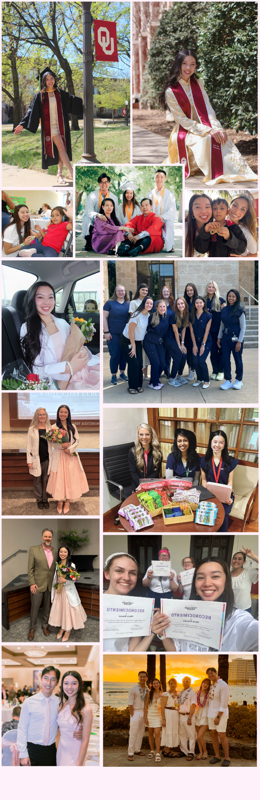

A passion for audiology and the Vietnamese community — combined into one meaningful capstone project.

I created Au.D. Viet Translations to bridge the gap between audiologists and Vietnamese-speaking patients. I graduated from the University of Oklahoma Health Center (OUHC) with a bachelor's degree in Communication Sciences and Disorders and am currently working toward my Doctorate of Audiology (Au.D.).
My passion for audiology and serving the Vietnamese community led me to develop this project as a way to make hearing healthcare more accessible for Vietnamese-speaking patients.
Browse TranslationsI first realized how much I struggled with audiological and medical terminology in Vietnamese when I volunteered at the Asian Health Fair, where I helped provide hearing screenings in Vietnamese. Although I grew up speaking Vietnamese at home, I quickly discovered that everyday conversation didn't translate well into medical settings. I found myself struggling to explain hearing tests, hearing loss, and hearing aids in a way that patients could understand.
I found that Vietnamese audiological resources are very limited in both Oklahoma and Vietnam. This was especially concerning because Vietnamese is the third most spoken language in Oklahoma, meaning many patients could be facing the same communication barriers in their healthcare. This realization made me more determined to find ways to bridge the communication gap and better serve Vietnamese-speaking patients.
That idea became the foundation for my capstone project: creating a dedicated English-to-Vietnamese translation resource for audiology. I hope that this project not only helps the Vietnamese community but also inspires others to create similar resources in different languages, making audiology more accessible to diverse patient populations worldwide.
This project is still in its early stages as I continue translating more clinical terminology. I'm excited to keep refining and expanding it to help bridge the language gap!
Thank you for visiting Au.D. Viet Translations and being part of this effort to improve communication in audiology!